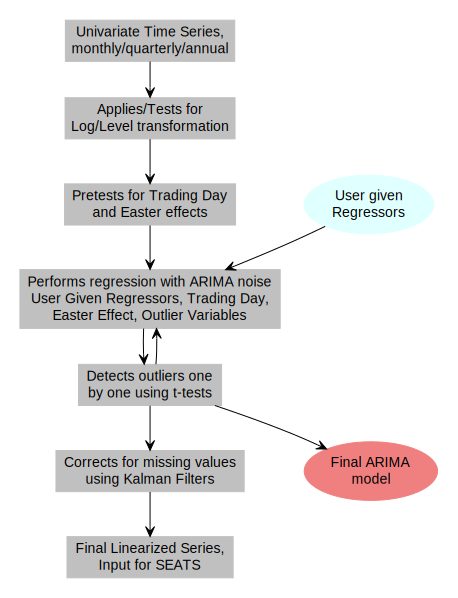
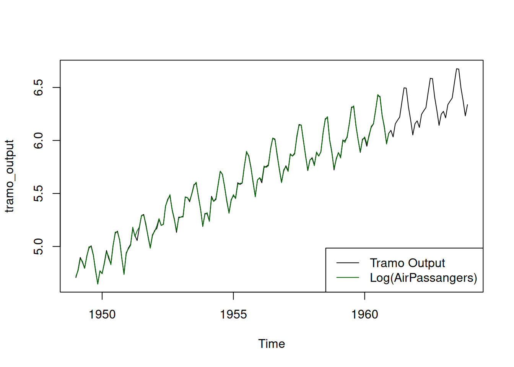
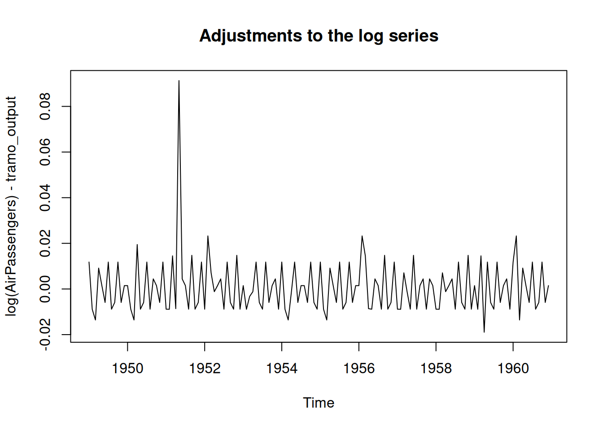

This is an example workflow of the TRAMO implemented in the seas() function in the seasnal package.
We will be using the AirPassengers dataset for this purpose. This dataset contains the monthly totals of international airline passengers, 1949 to 1960.
Tramo does the following things:
Log-level Specification: The user can input if a log transformation is required otherwise it performs a “trimmed-mean regression” test to identify if a log transformation is needed.
Performs pretests for the presence of Trading day effects , Easter effects.
Performs regression with ariam noise. It considers user given regressors. Regressors corresponding to treding day effects and easter effects, if found previously, are also added.
Detects outliers. Corrects for them and refits the model.
Calculates estimates for missing values.
Workflow of TRAMO
We will describe the steps taken by the TRAMO procedure and also try to verify the results.

Input series
We plot the original series, log of the original series and the final TRAMO output for a comparision. The plot for TRAMO output also contains the 3 year forecasts calculated by default
tramo_output <-series(m, "ref")[,'Reg.Resids']plot(tramo_output)lines(log(AirPassengers), col ='darkgreen' )legend("bottomright", legend =c("Tramo Output", "Log(AirPassangers)"),lwd=1, col =c("black", "darkgreen"))

plot(log(AirPassengers) - tramo_output, main ="Adjustments to the log series")

Identification of log-level specification
We first want to find out what transformation to apply on the data.
I found no reference or any paper for exactly how they perform the test except that they use a “trimmed mean regression” and compare the slope in both cases to a fixed number close to zero
See page 21 of new tramo_seats_manual.pdf for more information.
Assuming that we can identify that we want a log transformation we proceed by applying the transformation.
y <-log(AirPassengers)fit <-arima(y, order=c(1,1,0), seasonal =c(1,1,0))print(fit)
The program contains a pretest for Easter and Trading Day effects; this is done by running a regression on the default model In automatic model identifcation, if the model is changed, both tests are then redone. -page 30 new_tramo_seats_manual.pdf
The default model mentioned above is the airline model, popularized by Box and Jenkins (1976), which is ARIMA(0, 1, 1)(0, 1, 1)
So we will use this default model for testing weather to include trading day and Easter effects.
Easter effects: This variable models a constant change in the level of daily activity during the \(d\) days before Easter, and its typical value ranges between three and eight (default). The value of \(d\) can also be supplied by the user using the \(IDUR\) parameter. The variable has zeros for all months different from March and April. The value assigned to March is equal to \(p_m - m_M\) , where \(p_M\) is the proportion of the \(d\) days that fall on that month and \(m_M\) is the mean value of the proportions of the \(d\) days that fall on March over a long period of time. The value assigned to April is \(p_A - m_A\) , where \(p_A\) and \(m_A\) are defined analogously. Usually, a value of \(m_M = m_A = 1/2\) is a good approximation.
Note: When we look at the holiday variable regressor being using in seas() we find that it scaled version of 1 + the variable described above.
So there are multiple ways trading days can be incorporated.
We can have 6 variables corresponding to the 7 days of the weeks i.e each day having its own independent effect. The variables in that case would be \(N_{Mon}(t) - N_{Sun}(t), N_{Tue}(t) - N_{Sun}(t)\dots N_{Sat}(t) - N_{Sun}(t)\)Here, \(N_{Sun}(t)\) denotes the number of Sundays in the \(t^{th}\) month.
We can also have only one variable corresponding to the number of number of working and non-working days in a month. The variable in that case would be number of working days minus the number of non working days. Sundays, Saturdays and holidays (can also be given by the user) are considered to be non-working days.
Although it is mentioned that seas can use the variables of the first kind but only found the variable of the second kind in the documentation. So for now I am only considering the variable of the second kind. When we use the above the formula the results do not match even after scaling. Maybe seas() considers other holidays too somehow.
Observe that the AIC value is lower in the case when regression variables are included so the model with the regressors is better.
Note that the standard error of the parameter corresponding to the Easter effects is significant only at \(\alpha = 0.05\) under the assumption that the estimates follow a normal distribution. This matches with the result above.
Hence we take the trading day variable and not the Easter effect variable.
Outlier Detection
The default model is used for outlier detection.
model_with_td <-arima(y,xreg = trading_day_regressors, order =c(0,1,1), seasonal =c(0,1,1))residuals <-residuals(model_with_td)std_residuals <- residuals /sqrt(model_with_td$sigma2)plot(std_residuals, type ='o', main ="Standardized Residuals", xlab ="Time", ylab ="Standardized Residuals")abline(h =c(-3, 3), col ="red")